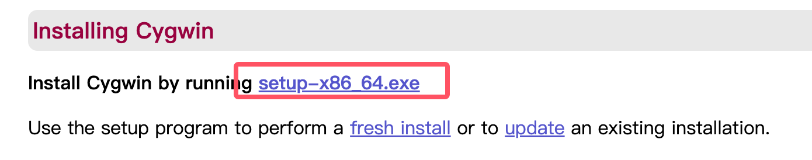
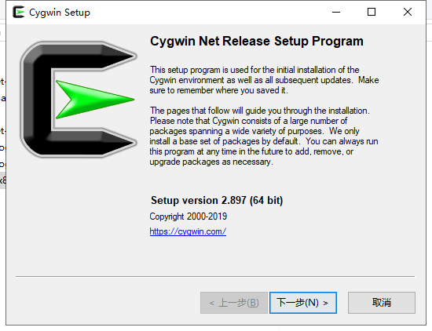
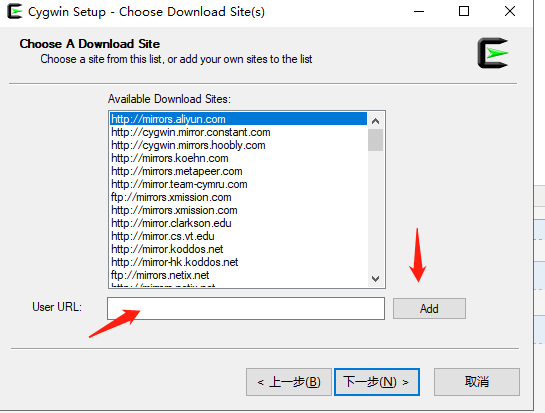
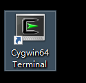
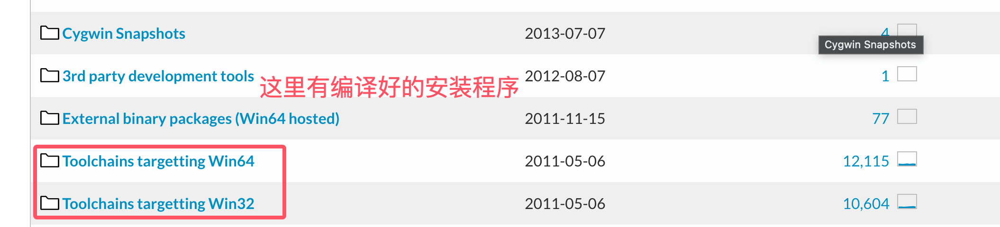

C 環境設定
C 言語環境を設定したい場合は、コンピュータに次の2つのソフトウェア（テキストエディタと C コンパイラ）が利用可能であることを確認する必要があります。
テキストエディタ
エディタで作成したファイルは通常ソースファイルと呼ばれ、ソースファイルにはプログラムのソースコードが含まれます。
C プログラムのソースファイルは通常、拡張子を使用します。.c。
プログラミングを始める前に、テキストエディタがあり、コンピュータプログラムを作成してファイルに保存し、コンパイルして実行するのに十分な経験があることを確認してください。
Visual Studio Code：汎用テキストエディタですが、C/C++ 開発をサポートするプラグインが多数あり、人気のある選択肢となっています。C/C++ プラグインをインストールして設定を調整することで、優れた C 言語開発環境にすることができます。
インストールチュートリアル：https://www.runoob.com/w3cnote/vscode-tutorial.html
ダウンロードアドレス：https://code.visualstudio.com/
Sublime Text：Sublime Text は、軽量で高速かつ高度にカスタマイズ可能なテキストエディタであり、C 言語の開発をサポートするプラグインが多数あります。強力なコード編集機能とショートカットキーを備えており、コーディングをより効率的にします。
ダウンロードアドレス：https://www.sublimetext.com/
Atom：Atom は、GitHub によって開発されたオープンソースのテキストエディタです。多くのプラグインとテーマがあり、C 言語開発に適した環境にカスタマイズできます。
ダウンロードアドレス：https://atom-editor.cc/
Vim 和 Emacs：これら2つは伝統的なテキストエディタであり、強力な編集機能と高度なカスタマイズ性を備えています。熟練したユーザーにとって非常に強力で、C 言語の開発をサポートする多くのプラグインや設定があります。
Eclipse：Eclipse はもう1つの強力な統合開発環境（IDE）です。もともとは Java 開発用に設計されていましたが、C/C++ プラグインをインストールすることで、C 言語開発をサポートすることができます。
C コンパイラ
ソースファイルに書かれたソースコードは人間が読めるソースです。これを「コンパイル」して機械語に変換し、CPU が指定された命令に従ってプログラムを実行できるようにする必要があります。
C 言語コンパイラは、ソースコードを最終的な実行可能プログラムにコンパイルするために使用されます。ここでは、プログラミング言語のコンパイラについて基本的な知識があることを前提としています。
最も一般的に使用される無料のコンパイラは GNU の C/C++ コンパイラです。HP または Solaris を使用している場合は、それぞれのオペレーティングシステム上のコンパイラを使用できます。
以下のセクションでは、さまざまなオペレーティングシステムに GNU の C/C++ コンパイラをインストールする方法を説明します。ここで C/C++ を併記しているのは、主に GNU の gcc コンパイラが C および C++ プログラミング言語の両方に適しているためです。
UNIX/Linux でのインストール
使用しているのがLinux または UNIXの場合は、コマンドラインで次のコマンドを使用して、システムに GCC がインストールされているかどうかを確認してください：
$ gcc -v
お使いのコンピュータに GNU コンパイラがすでにインストールされている場合は、次のようなメッセージが表示されます：
Using built-in specs. Target: i386-redhat-linux Configured with: ../configure --prefix=/usr ....... Thread model: posix gcc version 4.1.2 20080704 (Red Hat 4.1.2-46)
GCC がインストールされていない場合は、http://gcc.gnu.org/install/の詳細な説明に従って GCC をインストールしてください。
このチュートリアルは Linux に基づいて書かれており、記載されているすべての例は Cent OS Linux システムでコンパイル済みです。
Mac OS でのインストール
Mac OS X を使用している場合、GCC を入手する最も迅速な方法は、Apple の Web サイトから Xcode 開発環境をダウンロードし、インストール手順に従ってインストールすることです。Xcode をインストールすると、GNU コンパイラを使用できるようになります。
Xcode は現在、developer.apple.com/technologies/tools/からダウンロードできます。
Windows でのインストール
Cygwin
Cygwin は、Windows オペレーティングシステム上で Unix/Linux 環境をエミュレートするソフトウェアパッケージであり、ユーザーが Windows 上で Unix 系のツールやアプリケーションを使用できるようにします。
Cygwin は一連の DLL（ダイナミックリンクライブラリ）を提供することで、これらの DLL が Unix システムコール層と Windows カーネル間の橋渡し役となり、Unix プログラムが Windows システム上で実行できるようにします。
Cygwin 公式サイト：https://www.cygwin.com/。
公式サイトでインストールパッケージをダウンロードします：

ダウンロードが完了したら、ダウンロードしたファイルをダブルクリックします：

次に、[次へ(Next)] をクリックし続けます：


ここでは、NetEase オープンソースミラーや Alibaba Cloud ミラーを追加できます。https://mirrors.aliyun.com/cygwin/：

インストールが完了すると、デスクトップにアイコンが生成されます：

アイコンをダブルクリックしてコマンドラインインターフェースに入り、次のコマンドを入力しますcygcheck -c cygwinコマンドで現在の Cygwin のバージョン情報を確認できます：

次に、gcc/g++ のコンパイル環境をインストールします。コマンドラインで setup-x86_64.exe のあるディレクトリに移動し、次を実行します：
setup-x86_64.exe -q -P wget -P gcc-g++ -P make -P diffutils -P libmpfr-devel -P libgmp-devel -P libmpc-devel
インストールが完了したら、Cygwin64 ターミナルに入り、次のコマンドを入力しますgcc --versionコマンドでバージョン情報を確認できます。
MinGW-w64
Windows に GCC をインストールするには、MinGW-w64 をインストールする必要があります。
MinGW-w64 はオープンソースプロジェクトであり、Windows システムに完全な GCC ツールチェーンを提供し、32 ビットおよび 64 ビットの Windows アプリケーションのコンパイル生成をサポートします。
MinGW-w64 のホームページにアクセスし、mingw-w64.orgMinGW のダウンロードページに入り、https://www.mingw-w64.org/downloads/最新バージョンの MinGW-w64 インストーラをダウンロードします。
MinGW-w64 のダウンロード詳細ページには、MinGW-w64 および特定のツールの統合パッケージが多数含まれています：

MinGW-w64 のみをインストールするので、MinGW-w64 をダウンロードするだけで十分です。赤い枠内の「SourceForge」ハイパーリンクをクリックすると、SourceForge 内の MinGW-w64 ダウンロードページに入ります。
SourceForge で MinGW-w64 をダウンロードします：https://sourceforge.net/projects/mingw-w64/files/
Github にもコンパイル済みのバイナリパッケージがあります：https://github.com/niXman/mingw-builds-binaries/releases

指定されたシステム用のインストーラをダウンロードできます：
- 32 ビットシステム：installer.exe
- 64 ビットシステム：installer.exe

このインストール方法ではネットワーク接続エラーが発生する可能性があるため、sjlj（安定版で、64 ビットと 32 ビットの両方をサポート）を直接ダウンロードできます：
<p>ページを下にスクロールして、インストーラをダウンロードします：</p> <p><img decoding="async" style="width:70%" src="../wp-content/uploads/2014/09/7b544fedd185c3b84692c9e7aaf12cf2.png"></p><p> このインストール方法ではネットワーク接続エラーが発生する可能性があるため、sjlj（安定版で、64 ビットと 32 ビットの両方をサポート）を直接ダウンロードできます：</p> <p><img decoding="async" style="width:70%" src="../wp-content/uploads/2014/09/7b544fedd185c3b84692c9e7aaf12cf2.png"></p>ダウンロードが完了したら解凍し、bin ディレクトリ内で g++.exe または gcc.exe を見つけることができます：

MinGW をインストールする際は、少なくとも gcc-core、gcc-g++、binutils、MinGW runtime をインストールする必要がありますが、通常はさらに多くの項目をインストールします。
インストールした MinGW の bin サブディレクトリを、お使いのPATH環境変数に追加します。これにより、コマンドラインで簡単な名前を使用してこれらのツールを指定できます。

インストールが完了すると、Windows コマンドラインから gcc、g++、ar、ranlib、dlltool およびその他の GNU ツールを実行できます。
その他の拡張機能
Suck My Gun
307***101@qq.com
参考アドレス
Windows 環境での GCC の使用
MinGW は Minimal GNU on Windows の略で、GNU/Linux および Windows プラットフォームで、サードパーティのランタイムライブラリを必要とせずにネイティブな Windows プログラムを生成することができます。この記事では主に MinGW のインストールと使用について紹介します。
(一)インストール
g++、gdb をインストールしたい場合は、次のコマンドを入力するだけです:mingw-get install g++ 和 mingw-get install gdb
(二)使用方法
cmd の現在の作業ディレクトリに C プログラム test.c を作成します:
# include <stdio.h> int main() { printf("%s\n","hello world"); return 0; }cmd に次のコマンドを入力します:gcc test.c
現在のディレクトリに a.exe の実行可能ファイルが生成されます。cmd で a.exe と入力するとプログラムを実行できます。
プログラムをデバッグしたい場合は、gdb a.exe と入力します。
gdb の機能に入り、gdb の一般的なコマンドを使用してプログラムをデバッグできます。
Suck My Gun
307***101@qq.com
参考URL
末烽丶訪
101***7220@qq.com
Windows の環境変数の設定:
(1) ダウンロードしたファイルを C ドライブのルートディレクトリに解凍します。フォルダー名は MinGW にします。
(2) 「コンピューター」→(右クリック)「プロパティ」→「システムの詳細設定」→「環境変数」→「システム環境変数」で、Path を選択して「編集」をクリックし、MinGW フォルダー内の bin ディレクトリのパスをコピーします。私の場合は次のとおりです:
C:\MinGW\bin を Path にコピーして「OK」をクリックします。ディレクトリの前後のセミコロンに注意してください。必ずあり、かつ英文の半角である必要があります。
(3) 上と同様に、システム環境変数 lib を新規作成し、MinGW の lib フォルダーに対応させます。システム環境変数 include を新規作成し、MinGW の include フォルダーに対応させます。
ここまでで、C言語開発の基本環境が整いました。
末烽丶訪
101***7220@qq.com
結局、人に忘れられる
221***0052@qq.com
Android で gcc を使用する
c4droid は Android デバイス向けの C/C++ プログラムコンパイラです。デフォルトでは tcc (Tiny C Compiler) をコンパイラとして使用しますが、gcc プラグインを選択してインストールできます。gcc を選択すると、SDL（Simple DirectMedia Layer ライブラリ。SDL plugin for c4droid のインストールが必要）や Qt（Nokia 公式開発ライブラリ。SDL plugin for c4droid のインストールが必要）を使用できます。また、Google NDK のように、ネイティブ Android アプリ（SDL plugin for c4droid のインストールが必要）も開発できます。このソフトウェアはコードハイライトをサポートしており、コンパイル時間は CPU のクロック周波数に依存し、周波数が高いほどコンパイルが速くなります。gcc プラグインバージョン 5.00 にはサンプルプログラムが用意されており、SDL、Android ネイティブ、Qt、コマンドラインテストプログラムなどのソースコードが含まれています。
百度云リンク：C4droid5.96 中国語化版
https://pan.baidu.com/s/1kVn5x2Z
まず、自分のスマートフォンの種類を確認します。
対応するソフトウェアをダウンロードします。
ダウンロード後、
結局、人に忘れられる
221***0052@qq.com
電磁泡ShellV
i@l***x.dog
参考URL
Android に GCC をインストールする
Termux に gcc をインストールします。
Termux は、Android OS 上で Linux 環境をエミュレートできるターミナルアプリケーションで、root 権限のない Android 環境にも直接インストールできます。最小限の基本システムが自動的にインストールされ、Debian 系システムの APT パッケージマネージャーに似たものを使用して追加のソフトウェアパッケージを提供できます。
Termux では、gcc、Vim、nano、Python、w3m、さらには PHP + Composer を直接インストールできます。
Termux では SSHD を起動して SSH クライアントでリモート接続できます（Android ローカルで ConnectBOT のような管理ツールを使用した接続も含みます）。Unix 系システムと同様に gcc を使用して C 言語ファイルをコンパイルできます。
Termux 公式サイト：https://termux.com/
電磁泡ShellV
i@l***x.dog
参考URL
CoolLoser
103***3350@qq.com
gcc による C 言語のコンパイルは4つのステップに分かれています:
1.前処理、プリコンパイルファイル（.i ファイル）を生成:
2.コンパイル、アセンブリコード（.s ファイル）を生成:
3.アセンブル、オブジェクトファイル（.o ファイル）を生成:
4.リンク、実行可能ファイルを生成:
デバッグを行う際に、特定のステップが必要になることがあります。
CoolLoser
103***3350@qq.com
erili sun
151***1014@qq.com
Win10 で vscode を使用して C 言語をコンパイルします。MinGW をインストールしたら、その中から mingw32-gcc.bin、mingw32-gcc-g++.bin、および mingw32-gdb.bin を見つけます。1つ目は C 言語ファイルのコンパイラ、2つ目は C++ 用、3つ目はコンパイル後のファイルのデバッグに使用します。次に環境変数を設定し、.c ファイルを作成します。vscode で .c ファイルがあるフォルダーを開き（フォルダーであることに注意）、launch.json ファイルを次のように設定します:
{ "version": "0.2.0", "configurations": [ { "name": "(gdb) Launch", "type": "cppdbg", "request": "launch", "program": "${workspaceRoot}/${fileBasenameNoExtension}.exe", "args": [], "stopAtEntry": false, "cwd": "${workspaceRoot}", "environment": [], "externalConsole": true, "MIMode": "gdb", "miDebuggerPath": "E:\\MinGW\\bin\\gdb.exe", "preLaunchTask": "gcc",//tasks.json里面的名字 "setupCommands": [ { "description": "Enable pretty-printing for gdb", "text": "-enable-pretty-printing", "ignoreFailures": true } ] } ] }tasks.json ファイルは次のとおりです:
{ "version": "2.0.0", "tasks": [ { "label": "gcc", "type": "shell", "command": "gcc", "args": [ "-g", "${file}","-o","${fileBasenameNoExtension}.exe" ], "group":{ "kind": "build", "isDefault": true } } ] }erili sun
151***1014@qq.com
默默的输出
987***122@qq.com
私は初心者です。ネットで Win10 での C/C++ プログラミング環境の構築方法をいろいろ検索しましたが、どれも古いものでした。自分で長い時間試行錯誤してようやく成功したので、特別に共有します:
Win10 で eclipse を使用して C/C++ プログラミング環境を作成する方法（64ビットシステム）:
默默的输出
987***122@qq.com